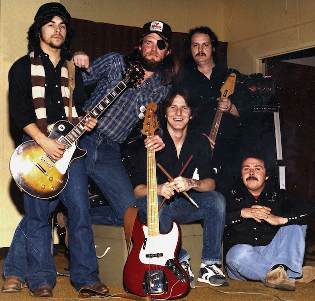

|  |
| The photo above was taken at a Walking
Horse Association awards party in the winter of 1982. From right to left are: Herb Baker, Jerry Gross, Ed Gross, Randy Blue Combs, John Browning. I was able to locate a rough cut demo version of an original song I wrote and recorded about the band Ghost Riders Express around 2002. |
| Click Here To PlayGhostRiders ©1992 John R Browning |